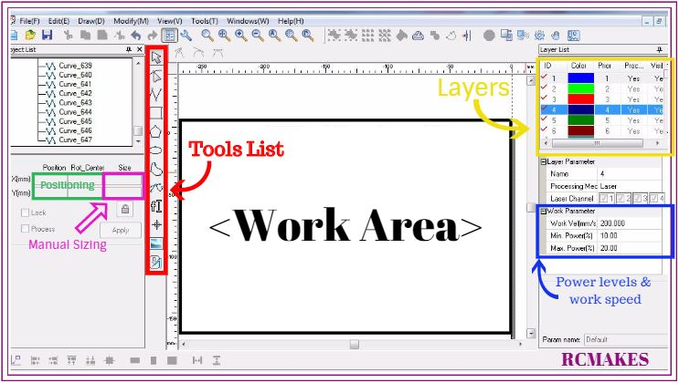

1. Using the switch on the black box located on the left side of the Laser Cutter flip the switch up, the switch will be located in the upper right area of the black box.
2. Flip the blue switch located on the right side of the Laser Cutter.
3. Twist the keys on the Laser Cutter which is located ontop of the machine clock-wise.
4. Lastly push the button located directly to the right of the keys, the button should light up white.
5. To adjust the laser turn the top knob in a foward facing direction to loosen it. Once loosened adjust it to the desired height, to tighten the laser simply pull the knob in the direction facing you.
6. If SmartCarve 4.3 Is'nt already open, you will find it located on the taskbar and has a geomentric shape surrounded by a green border.
7. Going in the reverse order as turning on the Laser Cutter will turn off the Laser Cutter
How to insert simple shapes onto the work area.

1. Using the tools list located on the right in SmartCarve, you can select any of the tool icons that are needed.
2. Once you've clicked on the shape you would like hover the mouse over to the work area and insert it.
3. click the "cursor" tool in the tool list to exit the current shape being used.
4. You can resize the shape in the measurment box located in the object list. The sizing option is to the right of "Rot_Center", defualt measurements are in millimeters.
Inserting DXF/JPG Images.
1. To insert a DXF or JPG go to File, then click on "import item" when importing DXF files a pop up will come up with extra options, simply click "ok" if no extra options are needed.
Safety Guidelines:
1. Our Laser cutter can be used to cut and engrave onto the follow materials: less then 1/2 inch Wood, Leather, Rubber, plexiglass, plasitc, paper-like materials and acrylic. It can also be used to engrave onto most metals.
2. Do not turn on the laser until the casing is closed.
3. Avoid looking directly at the laser when in operation.
4. Be cautious about fumes that are emitted after using the laser cutter especially for plastics.
5. When cutting paper or thick pieces of wood at slow work speeds, be especially cautious of flames.
6. Be aware of fire safety procedures https://www.ehs.washington.edu/rsononion/LaserCutterSafety.pdf.
7. If there is ever an emergency or you see something wrong with the laser hit the BIG RED EMERGENCY STOP BOTTON located on the front right side of the Laser Cutter.